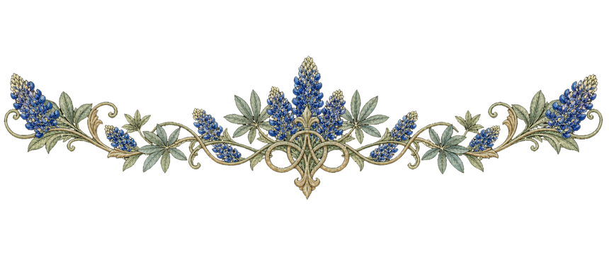

How the tools are built
Every application in this catalog is a native desktop program — mostly PySide6 on Windows and macOS, one built on Tauri, two as Lightroom plugins. They open fast, they work offline, and they keep their data on your machine.
- Nothing phones home. No telemetry, no account, no licence server. Where a tool touches the network at all — a map tile, an update check — it is off until you turn it on, and it says so.
- One version number per application, held in a single source and read back at runtime, so the number in the About dialog is the number that was built.
- Uncertainty is reported, not resolved. Several of these tools work on data where a confident wrong answer is worse than a flagged ambiguity, and they are written that way on purpose.
- Long operations show progress and can be cancelled, and batch runs end with real totals rather than a cheerful summary.
Releases and updates
The applications share a common update mechanism that checks a local network share first and a public release channel second. A package is never executed before its checksum has been verified, and nothing installs without explicit confirmation. No credentials are embedded in any shipped application.
This site is the public record of what exists. Binaries themselves stay in private distribution — see Access and releases for what each status means and how to ask about a build.
Licensing
Most of the catalog is released under the Apache License 2.0, copyright Bluebonnet Studios. Each tool page states the licence that applies to it. Where a licence has not been declared yet, the page says “Not stated” rather than implying one.
Where the name comes from
Lupinus texensis, the Texas bluebonnet: royal-cobalt petals, a pale banner spot that turns magenta once the flower has been pollinated, yellow-green buds at the top of the raceme that have not opened yet, and vivid grass underneath. That is the whole palette this site is built from, and the reason the mark is a flower on a stem rather than a logotype.
The status colours come from the same place, and mean what the flower means: grass for what is available, bud yellow for what has not opened, the pollinated magenta for what has been handed out on request, and no colour at all for what has not started.
